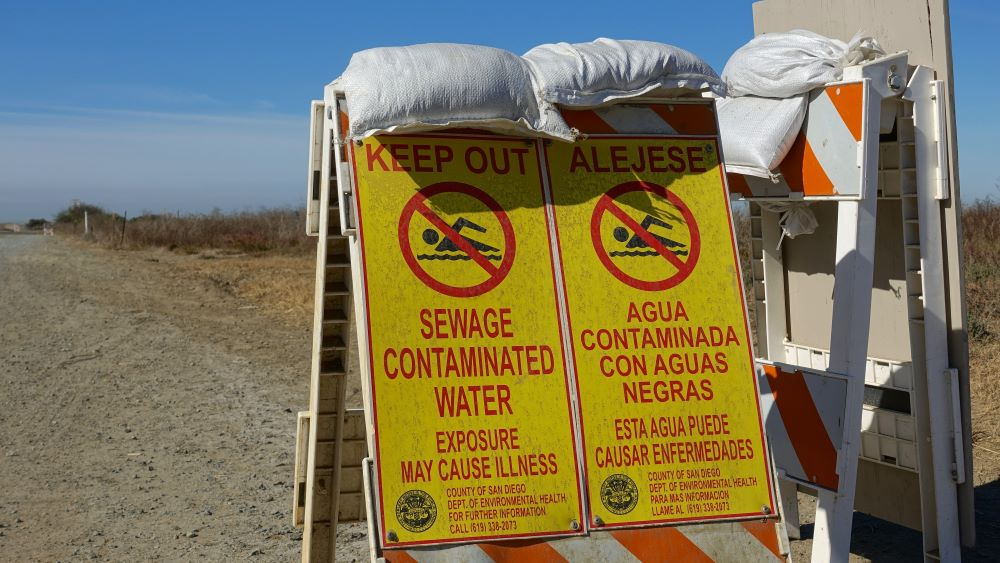
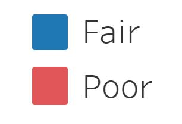
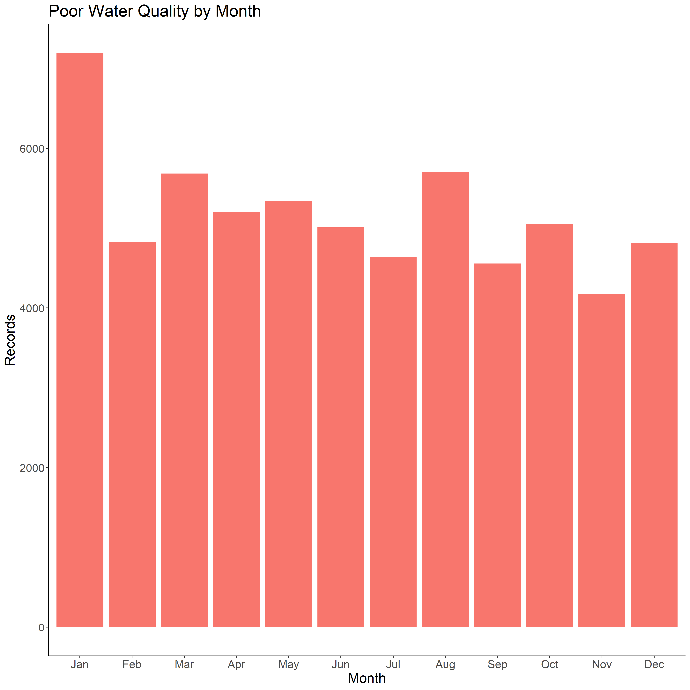
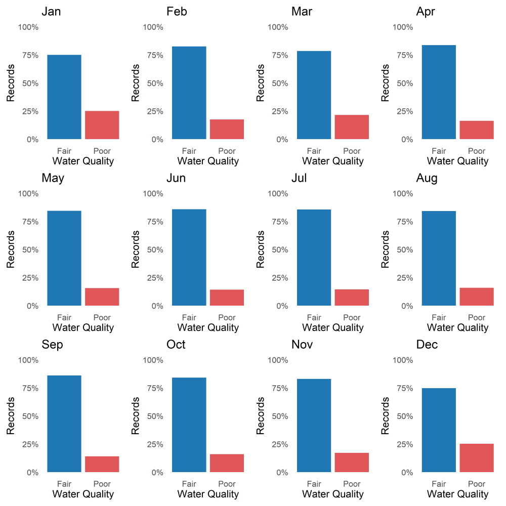
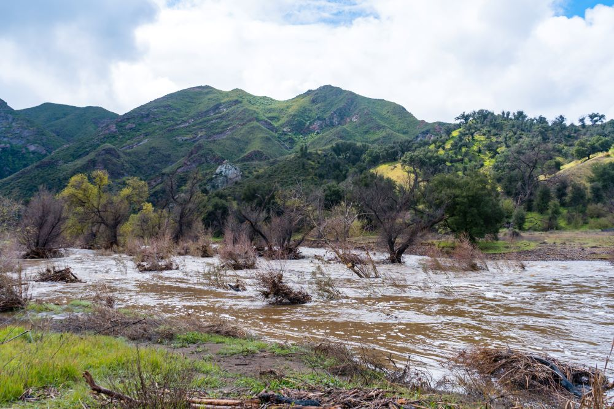
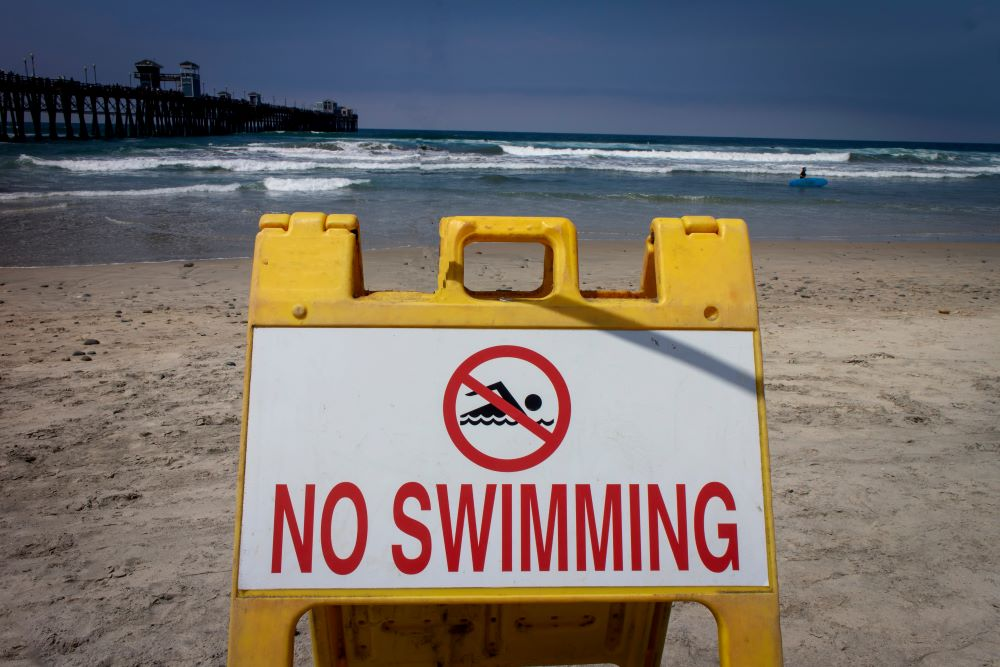

California contains some of the most exquisite beaches, lakes, and rivers in the world
However, these bodies of water are periodically closed due to unsafe levels of bacteria in the water

Our team analyzed water quality throughout the state and created a forecasting model to predict water quality at different sites
The Data
We pulled data from the CA State Water Resources Control Board SafeToSwim dataset for the years 2020-Present
The dataset contains more than 1,000,000 entries collected from various collection sites throughout the state
To interpret this data, we designated a threshold at which stations are considered to have "Poor" or "Fair" water quality

View the most recent water quality designation for each station below
Analysis
Our analysis showed that the month of January contained the highest counts of poor water quality records throughout the state

However, the month of December contained the highest percentage of poor water quality records relative to other months
Water Quality by Month

This is likely because California receives the majority of its annual rainfall during the winter months
During rain events, nutrients and other contaminants are transfered from land into bodies of water and drive the growth of bacteria

The early rain events of the winter can be particularly polluting due to the accumulation of contaminants and nutients that have not washed away for months
This may explain why December has the greatest proportion of poor water quality events
The Forecasting Model
We additionally created a forecasting model to predict future water quality at various beaches in Los Angeles County
Our model indicated that all selected stations would trend towards poor water quality over the next several months

View the predicted water quality for each station below